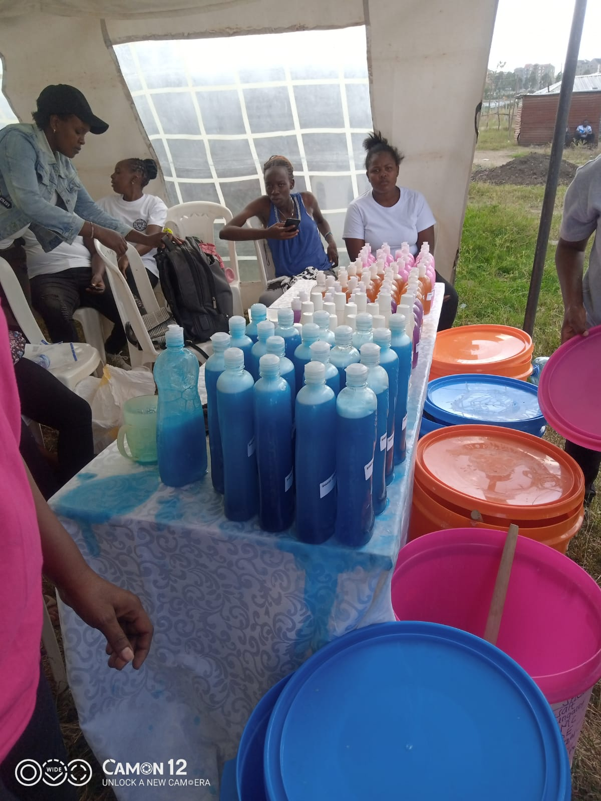
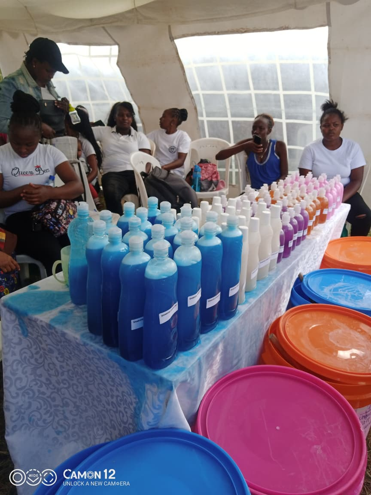

Situation
Trapped in Cycles of Dependency
In many informal settlements, women face significant economic and social barriers that limit their ability to earn a stable income and fully participate in community life. Limited access to skills training, financial services, and markets often traps households in cycles of poverty and dependence. This economic vulnerability is closely linked to broader social challenges, including gender-based violence, early pregnancies, and increased health risks such as HIV and AIDS.